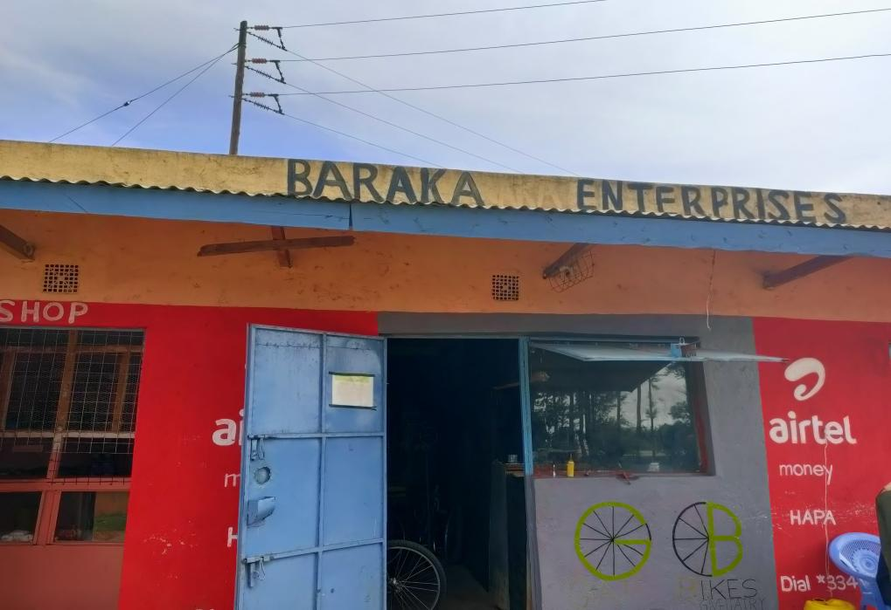
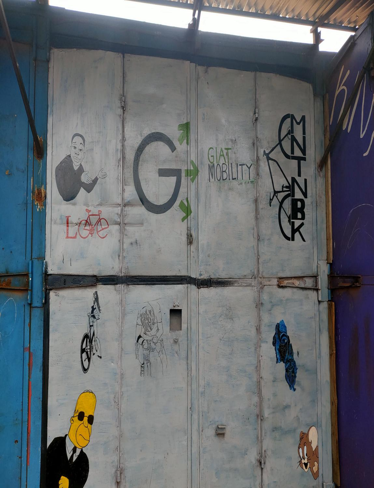

Affordable e-bike hire
Electric bikes available by the hour make a flexible, lower-emission trip easier to choose.

A better way to move
Affordable e-bike hire and real-time air-quality insights, built around the way African cities move.
Two wheels to start.
A more connected city in motion.


LOCAL MOBILITY CENTREA place to start your rideReal bikes. Local roots. More ways to get where you’re going.
Movement, made more accessible
Giat brings together affordable electric bike hire and on-the-ground air-quality data. It is a practical, connected approach to moving through African cities — starting with the ride and growing with the needs around it.
Explore what we doA connected mobility network
We start with the essentials people need today, then build a platform for healthier, more useful journeys tomorrow.
Electric bikes available by the hour make a flexible, lower-emission trip easier to choose.
Real-time air-quality monitoring brings useful environmental insight into the everyday journey.
A lease-first model helps make the network adaptable to local needs and future mobility services.
One connected network. Ride revenue, data-as-a-service, and future logistics can grow from the same local foundation.
Momentum since July 2024
Giat is live, learning, and growing — with real rides on the road and more distance covered together.
Grow with GiatOur team
Mobility is built on the ground. Giat brings people, practical technology, and local partnerships together to make the network work for the places it serves.
Co-Founder, Team Lead and Tech Lead
Graduate Mechanical Engineer
Co-Founder, Operations and Finance Lead
Graduate Mechanical Engineer
Advisor
HOD Mechanical, Production and Energy Engineering, Moi University
Let's move forward
Whether you are a rider, a city, a business, or a potential partner, we would love to explore what better mobility could look like together.
Start a conversation